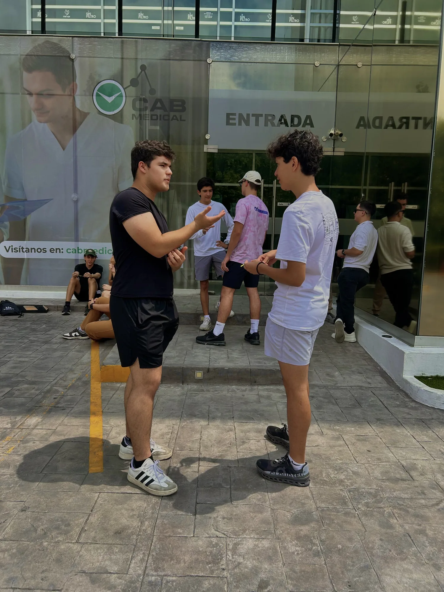

PRÓXIMO EVENTO · MONTERREY
¿Te animas a vivirlo?
26 DE SEPTIEMBRE
🕔 5:00 PM – 8:00 PM
📍 Parque El Capitán
Tres horas para salir de la rutina, conocer personas nuevas y poner a prueba tu comunicación a través de retos y experiencias prácticas.
No necesitas experiencia previa ni ser una persona extrovertida. Solo venir dispuesto a participar.
👀 Las dinámicas cambian en cada evento.
Lo que pase esta vez, lo descubrirás ahí.
Lo que pase esta vez, lo descubrirás ahí.